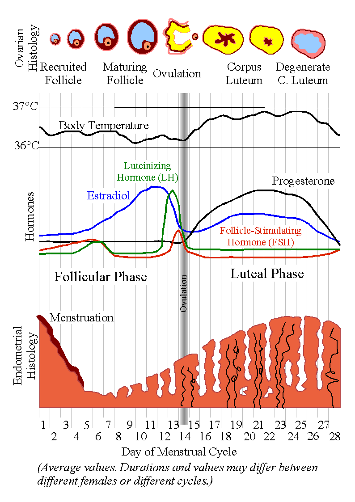

<!DOCTYPE html>
<html lang="vi">
<head>
  <meta charset="UTF-8">
  <meta name="viewport" content="width=device-width, initial-scale=1.0">
  <title>Trục Não Bộ - Buồng Trứng: Vì Sao Trí Lực, Sự Tập Trung & Cảm Xúc Biến Động Theo Từng Tuần? | The Neuro-Endocrine Axis: Why Energy, Focus & Mood Shift Across the Month</title>
  <link rel="stylesheet" href="../styles.css">
  <link rel="preconnect" href="https://fonts.googleapis.com">
  <link rel="preconnect" href="https://fonts.gstatic.com" crossorigin>
  <link href="https://fonts.googleapis.com/css2?family=Plus+Jakarta+Sans:wght@400;500;600;700;800&family=Lora:ital,wght@0,400;0,500;0,600;1,400&display=swap" rel="stylesheet">
</head>
<body class="blog-post-page">
  <div class="reading-progress-container">
    <div id="reading-progress" class="reading-progress-bar"></div>
  </div>

  <!-- Sticky Top Navigation with Bilingual Switcher -->
  <header class="navbar post-navbar">
    <div class="nav-container">
      <a href="../index.html" class="brand" style="text-decoration: none;">
        <div class="brand-logo">⚡</div>
        <div class="brand-text">
          <span class="brand-title">PULSE & VITALITY</span>
          <span class="brand-subtitle" id="post-brand-subtitle">Cẩm Nang Khoa Học Sức Khỏe & Thiết Bị Đeo</span>
        </div>
      </a>
      <div class="nav-actions">
        <div class="lang-switch-group" role="group" aria-label="Language Switcher">
          <button id="post-lang-vi" class="lang-btn active" onclick="switchPostLang('vi')">🇻🇳 Tiếng Việt</button>
          <button id="post-lang-en" class="lang-btn" onclick="switchPostLang('en')">🇬🇧 English</button>
        </div>
        <a href="../index.html" class="btn-back-hub" id="post-back-btn">
          ← Quay lại Danh sách
        </a>
      </div>
    </div>
  </header>

  <!-- ========================================================= -->
  <!-- VIETNAMESE ARTICLE CONTAINER                              -->
  <!-- ========================================================= -->
  <main id="post-container-vi" class="article-page-container">
    <nav class="article-breadcrumb">
      <a href="../index.html?lang=vi">Trang chủ</a>
      <span class="sep">/</span>
      <a href="../index.html?lang=vi">Sức khỏe Nữ giới</a>
      <span class="sep">/</span>
      <span class="current">Hormonal Health — Mood & Neurotransmitters</span>
    </nav>

    <header class="article-page-header">
      <div class="article-badges-row">
        <span class="badge" style="background: #FCE7F3; color: #DB2777; font-weight: 700;">
          🌸 Sức khỏe Nữ giới
        </span>
        <span class="badge badge-sub">Hormonal Health — Mood & Neurotransmitters</span>
        <span class="badge badge-type">Deep dive</span>
        <span class="article-read-time">⏱ 8 phút đọc</span>
      </div>

      <h1 class="article-main-title">Trục Não Bộ - Buồng Trứng: Vì Sao Trí Lực, Sự Tập Trung & Cảm Xúc Biến Động Theo Từng Tuần?</h1>
      <p class="article-sapo-lead">Sự thăng trầm của cảm xúc trong tháng không bắt nguồn từ sự yếu đuối tâm lý—đó là hệ quả trực tiếp của trục Thần kinh – Nội tiết. Khám phá cách Estradiol điều phối nồng độ Serotonin và Dopamine, cùng nguyên nhân tại sao sự sụt giảm đột ngột của Allopregnanolone trước kỳ kinh lại kích hoạt cảm giác lo âu và giảm động lực trên biểu đồ thiết bị đeo.</p>

      <figure class="article-featured-hero">
        
        <figcaption>Trục Não Bộ - Buồng Trứng: Vì Sao Trí Lực, Sự Tập Trung & Cảm Xúc Biến Động Theo Từng Tuần? • <a href="https://images.unsplash.com/photo-1544005313-94ddf0286df2?auto=format&fit=crop&w=1200&q=85" target="_blank" rel="noopener noreferrer" class="img-source-badge">Link ảnh gốc xác thực (Unsplash) ↗</a></figcaption>
      </figure>

      <div class="article-metadata-card">
        <div class="meta-avatar">PV</div>
        <div class="meta-content">
          <div class="meta-author">Hội Đồng Biên Tập Y Khoa Pulse & Vitality</div>
          <div class="meta-details">
            <span>Nguồn nghiên cứu & Thiết bị: <strong>Neuropsychopharmacology (Barth et al., 2015) & Am J Psychiatry (Epperson et al., 2012)</strong></span>
            <span class="meta-dot">•</span>
            <span>Màn hình App: <strong>Menstrual Cycle Screen</strong></span>
            <span class="meta-dot">•</span>
            <span>Chỉ số: <strong>Hormones & Neurotransmitters (HO-06 / REC-03)</strong></span>
          </div>
        </div>
      </div>
    </header>

    <section class="takeaway-banner-large">
      <div class="takeaway-banner-header">
        <span class="takeaway-icon-lg">💡</span>
        <span>Điểm Cốt Lõi & Hành Động Thực Tế</span>
      </div>
      <p>Sự sụt giảm năng lượng và tính nhạy cảm cảm xúc trước kỳ kinh là phản ứng thần kinh - hóa sinh thực tế. Hãy sắp xếp các công việc đòi hỏi tư duy sáng tạo, đàm phán vào tuần Estrogen cao (ngày 6–13), và chủ động giảm tải xã hội, tăng cường giấc ngủ phục hồi trong 7 ngày trước kỳ kinh.</p>
    </section>

    <article class="article-rich-body">
      <h2>Não Bộ Phụ Nữ Là Một Cơ Quan Nội Tiết Nhạy Cảm</h2>
<p>Trong nhiều thập kỷ, những thay đổi về tâm trạng trước kỳ kinh thường bị xem nhẹ bằng những lời trêu chọc thiếu cảm thông như "tính khí thất thường" hay "do tâm lý phụ nữ". Tuy nhiên, ngành khoa học thần kinh hiện đại (<strong>Neuro-endocrinology</strong>) đã khẳng định một sự thật hoàn toàn khác: <strong>Não bộ của phụ nữ chứa mật độ thụ thể estrogen và progesterone dày đặc tại vỏ não trước trán (Prefrontal Cortex), hồi hải mã (Hippocampus) và hạch hạnh nhân (Amygdala)—những trung tâm điều hành cảm xúc, sự tập trung và trí nhớ.</strong></p>
<p>Khi nồng độ các hormone buồng trứng dao động theo chu kỳ, chúng trực tiếp điều chỉnh tốc độ tổng hợp, phân hủy và độ nhạy của các chất dẫn truyền thần kinh quan trọng nhất:
- <strong>Serotonin:</strong> Quyết định cảm giác bình yên, lạc quan và chất lượng giấc ngủ.
- <strong>Dopamine:</strong> Thúc đẩy động lực, sự tập trung cao độ và cảm giác thỏa mãn khi hoàn thành mục tiêu.
- <strong>GABA (Axit Gamma-Aminobutyric):</strong> "Chiếc phanh" hãm căng thẳng chính của não bộ, mang lại sự điềm tĩnh và chống lo âu.</p>
<figure class="article-inline-diagram">
  
  <figcaption>📊 <strong>Sự Giao Thoa Giữa Hormone & Dẫn Truyền Thần Kinh:</strong> Estradiol làm tăng nồng độ serotonin tự do bằng cách ức chế enzyme MAO; trong khi chất chuyển hóa allopregnanolone tác động trực tiếp lên thụ thể GABA-A. <a href="https://commons.wikimedia.org/wiki/File:Neurotransmitters.svg" target="_blank" rel="noopener">Nguồn sơ đồ: Wikimedia Commons ↗</a></figcaption>
</figure>

<hr />
<h2>4 Tuần Lễ Cảm Xúc: Bản Đồ Thần Kinh - Nội Tiết Qua Từng Giai Đoạn</h2>
<p>Dựa trên các công trình nghiên cứu chụp cộng hưởng từ chức năng não bộ (fMRI) của <strong>Barth et al. (2015)</strong> và dữ liệu triệu chứng từ hàng triệu phụ nữ trên thế giới (<strong>Pierson et al., Nature Human Behaviour 2021</strong>), tâm lý phái đẹp vận hành theo 4 pha thần kinh rõ rệt:</p>
<table>
<thead>
<tr>
<th style="text-align: left;">Giai Đoạn Chu Kỳ</th>
<th style="text-align: left;">Trạng Thái Hormone Chủ Đạo</th>
<th style="text-align: left;">Động Học Chất Dẫn Truyền Thần Kinh</th>
<th style="text-align: left;">Trạng Thái Tâm Lý &amp; Năng Lượng Thực Tế</th>
<th style="text-align: left;">Tín Hiệu Trên Thiết Bị Đeo (WHOOP / Oura / Apple)</th>
</tr>
</thead>
<tbody>
<tr>
<td style="text-align: left;"><strong>Tuần 1: Kỳ Kinh (Ngày 1–5)</strong></td>
<td style="text-align: left;">Cả Estrogen và Progesterone đều ở mức đáy; nồng độ bắt đầu nhích nhẹ từ Ngày 3.</td>
<td style="text-align: left;">Nồng độ chất dẫn truyền ở mức trung tính; giải tỏa áp lực sinh lý của pha hoàng thể trước đó.</td>
<td style="text-align: left;">Sự bình tĩnh trở lại; cơ thể hơi mỏi cơ học nhưng tâm trí sáng suốt; thích hợp để chiêm nghiệm và lập kế hoạch tháng mới.</td>
<td style="text-align: left;"><strong>HRV bật tăng sang vùng màu xanh</strong>; RHR hạ dần về mức nền sau ngày thứ 2 của kỳ kinh.</td>
</tr>
<tr>
<td style="text-align: left;"><strong>Tuần 2: Nang Trứng &amp; Rụng Trứng (Ngày 6–14)</strong></td>
<td style="text-align: left;"><strong>Estradiol (E2)</strong> tăng vọt lên đỉnh cao nhất; testosterone đạt đỉnh ngắn hạn quanh ngày 13–14.</td>
<td style="text-align: left;">Estrogen ức chế enzyme Monoamine Oxidase (MAO), làm tăng vọt <strong>Serotonin &amp; Dopamine</strong> tự do; tăng kết nối synap ở vùng hải mã.</td>
<td style="text-align: left;">Trí nhớ ngôn ngữ sắc bén, năng lượng dồi dào, tự tin xã hội, tư duy lạc quan và khả năng chịu áp lực cao nhất tháng.</td>
<td style="text-align: left;"><strong>Điểm Phục hồi (Recovery) cao nhất tháng</strong>; thời gian ngủ sâu (Deep Sleep) đạt tỷ lệ tối ưu.</td>
</tr>
<tr>
<td style="text-align: left;"><strong>Tuần 3: Hoàng Thể Sớm (Ngày 15–21)</strong></td>
<td style="text-align: left;"><strong>Progesterone</strong> tăng vọt; đỉnh estrogen thứ cấp nhẹ.</td>
<td style="text-align: left;">Progesterone chuyển hóa thành <strong>Allopregnanolone (ALLO)</strong>—một chất kích hoạt thụ thể GABA-A mạnh mẽ tương tự thuốc an thần tự nhiên.</td>
<td style="text-align: left;">Năng lượng chuyển từ hướng ngoại sang hướng nội; cảm giác thư thái, muốn dành thời gian ở nhà; khả năng tập trung vào chi tiết tỉ mỉ tăng.</td>
<td style="text-align: left;">Thân nhiệt da tăng <strong>+0.3°C</strong>; nhịp tim nghỉ ngơi RHR bắt đầu nhích nhẹ <strong>+2 đến +4 bpm</strong>.</td>
</tr>
<tr>
<td style="text-align: left;"><strong>Tuần 4: Hoàng Thể Muộn (Ngày 22–28)</strong></td>
<td style="text-align: left;">Cả Estrogen và Progesterone <strong>lao dốc không phanh</strong> để chuẩn bị cho kỳ kinh mới.</td>
<td style="text-align: left;">Nồng độ <strong>Allopregnanolone tụt dốc đột ngột</strong> tạo ra hội chứng "cai thuốc an thần"; thụ thể Serotonin giảm độ nhạy; hạch hạnh nhân phản ứng quá mức.</td>
<td style="text-align: left;">Dễ cáu gắt, nhạy cảm với lời chỉ trích, cảm giác quá tải tinh thần dù công việc không đổi; thèm đồ ngọt do não cần glucose bù serotonin.</td>
<td style="text-align: left;"><strong>HRV giảm 10%–15%</strong>; giấc ngủ REM bị cắt ngắn; điểm Quản lý Căng thẳng (Stress Score) ghi nhận nhiều đỉnh kích thích ban ngày.</td>
</tr>
</tbody>
</table>
<hr />
<h2>Hiện Tượng "Cai Allopregnanolone": Bí Ẩn Đằng Sau Sự Cáu Gắt Tiền Kinh Nguyệt</h2>
<p>Tại sao nhiều phụ nữ cảm thấy hoàn toàn bình thường suốt cả tháng, nhưng chỉ trong 5 đến 7 ngày trước kỳ kinh, họ bỗng chốc cảm thấy cả thế giới đang chống lại mình?</p>
<p>Câu trả lời nằm ở phân tử <strong>Allopregnanolone (ALLO)</strong>:
1. Khi nồng độ progesterone cao ở tuần thứ 3, não bộ thích nghi với mức ALLO dồi dào—chất này gắn vào tiểu đơn vị $lpha_4eta_2\delta$ của thụ thể <strong>GABA-A</strong>, tạo ra hiệu ứng làm dịu thần kinh tương tự như một liều thuốc an thần nội sinh.
2. Đến tuần thứ 4, khi hoàng thể teo đi, progesterone và ALLO <strong>sụt giảm hơn 90% chỉ trong vòng 72 giờ</strong>.
3. Ở những phụ nữ có hệ thần kinh nhạy cảm (chiếm khoảng 20–30% dân số nữ, và đặc biệt là 3–8% phụ nữ mắc hội chứng PMDD), sự tụt dốc của ALLO tạo ra một <strong>phản ứng giống hệt hội chứng cai thuốc (withdrawal response)</strong>: thụ thể GABA bị mất tín hiệu ức chế, khiến hạch hạnh nhân (trung tâm báo động nỗi sợ) hoạt động mất kiểm soát.</p>
<p>Kết quả là: tiếng ồn nhỏ cũng gây bực mình, một email phê bình nhẹ cũng trở thành thảm họa, và năng lượng cảm xúc cạn kiệt. Đây là sự kiện sinh hóa thực tế 100%, không phải do bạn "nghĩ ra"!</p>
<hr />
<h2>4 Chiến Lược Tối Ưu Năng Lượng &amp; Tâm Lý Theo Chu Kỳ</h2>
<ol>
<li><strong>Thiết Kế Lịch Làm Việc "Đồng Bộ Não Bộ":</strong>
   - <strong>Ngày 6–14 (Pha Estrogen):</strong> Xếp lịch cho các cuộc họp quan trọng, thuyết trình đối tác, brainstorm ý tưởng mới và các buổi tập thể thao nặng.
   - <strong>Ngày 21–28 (Pha Hoàng thể muộn):</strong> Chuyển sang các đầu việc độc lập, kiểm tra báo cáo, viết tài liệu chi tiết và hạn chế nhận thêm cam kết mới.</li>
<li><strong>Bổ Sung 300–400 mg Magie Glycinate &amp; Vitamin B6:</strong> Magie là đồng yếu tố bắt buộc để cơ thể chuyển hóa GABA và điều hòa thụ thể NMDA, trong khi Vitamin B6 tham gia trực tiếp vào quá trình tổng hợp Serotonin từ tryptophan. Sử dụng đều đặn từ ngày thứ 18 giúp làm dịu hạch hạnh nhân rõ rệt.</li>
<li><strong>Nạp Tinh Bột Phức Hợp Chậm Để Cứu Lấy Serotonin:</strong> Cơn thèm carb trước kỳ kinh là tín hiệu não bộ đang tìm cách vận chuyển amino axit tryptophan vượt qua hàng rào máu não để sản xuất serotonin. Thay vì ăn bánh ngọt (làm đường huyết tăng vọt rồi sụt dốc khiến tâm trạng tồi tệ hơn), hãy chọn yến mạch, khoai lang, gạo lứt hoặc socola đen 85%.</li>
<li><strong>Tập Hít Thở 5.5 Giây Khi Cảm Xúc Quá Tải:</strong> Nhịp thở 5.5s hít vào : 5.5s thở ra kích hoạt trực tiếp dây thần kinh phế vị, đưa nhịp tim và chỉ số HRV trở lại trạng thái cân bằng trong vòng 3 phút mỗi khi cơn cáu gắt bùng phát.</li>
</ol>
<hr />
<h2>Tài Liệu Tham Khảo &amp; Nguồn Y Khoa</h2>
<ol>
<li><strong>Barth, C., Villringer, A., &amp; Sacher, J. (2015).</strong> <em>Sex hormones affect neurotransmitters and shape the adult female brain during hormonal transition periods.</em> Neuropsychopharmacology, 40(1), 209–222. <a href="https://pubmed.ncbi.nlm.nih.gov/25511370/">Đọc trên PubMed / NIH ↗</a></li>
<li><strong>Epperson, C. N., Steiner, M., Hartlage, S. A., et al. (2012).</strong> <em>Premenstrual dysphoric disorder: evidence for a new category for DSM-5.</em> American Journal of Psychiatry, 169(5), 465–475. <a href="https://pubmed.ncbi.nlm.nih.gov/22764360/">Đọc trên PubMed / NIH ↗</a></li>
<li><strong>Pierson, E., Althoff, T., &amp; Leskovec, J. (2021).</strong> <em>Daily, weekly, and seasonal patterns in women's mood and physical symptoms across the menstrual cycle.</em> Nature Human Behaviour, 5(6), 716–725. <a href="https://pubmed.ncbi.nlm.nih.gov/33753909/">Đọc trên Nature / PubMed ↗</a></li>
<li><strong>Hantsoo, L., &amp; Epperson, C. N. (2015).</strong> <em>Allopregnanolone in premenstrual dysphoric disorder (PMDD): Evidence for dysregulated, altered GABA-A receptor plasticity.</em> Current Psychiatry Reports, 17(11), 87. <a href="https://pubmed.ncbi.nlm.nih.gov/26377759/">Đọc trên PubMed / NIH ↗</a></li>
</ol>
    </article>

    <section class="canonical-citation-card">
      <div class="citation-icon">📚</div>
      <div class="citation-body">
        <h4>Nguồn Tham Khảo Y Khoa & Nghiên Cứu Gốc</h4>
        <p>Bài viết này được tổng hợp và kiểm chứng từ các nghiên cứu y sinh học, hướng dẫn lâm sàng và tài liệu khoa học thiết bị đeo của <strong>Neuropsychopharmacology (Barth et al., 2015) & Am J Psychiatry (Epperson et al., 2012)</strong>.</p>
        <div class="citation-actions">
          <a href="https://pubmed.ncbi.nlm.nih.gov/25511370/" target="_blank" rel="noopener noreferrer" class="btn-canonical-study">
            Xem Nghiên Cứu Gốc / Bài Báo Khoa Học ↗
          </a>
        </div>
      </div>
    </section>

    <nav class="post-pagination-nav">
      
    <a href="WH_06.html?lang=vi" class="post-nav-btn prev">
      <span class="nav-direction">← Bài viết trước</span>
      <span class="nav-title">Estrogen & Progesterone: Bản Giao Hưởng Nội Tiết Tác Động Toàn Diện Lên Tim Mạch, Xương Khớp & Não Bộ</span>
    </a>
      
    <a href="WH_09.html?lang=vi" class="post-nav-btn next">
      <span class="nav-direction">Bài tiếp theo →</span>
      <span class="nav-title">Giải Mã Ham Muốn Nữ Giới: Động Lực Hormone, Trương Lực Thần Kinh & Cơ Chế Hưng Phấn Đa Tầng</span>
    </a>
    </nav>

    <section class="related-articles-section">
      <div class="related-section-header">
        <h3>Bài viết liên quan thuộc chủ đề Sức khỏe Nữ giới</h3>
      </div>
      <div class="related-posts-grid">
        
        <a href="LM_WH_01.html?lang=vi" class="related-post-card">
          <div class="related-post-img" style="background-image: url('../images/LM_WH_01_hero.jpg');">
            <span class="related-post-badge" style="background: #FCE7F3; color: #DB2777;">
              🌸 Sức khỏe Nữ giới
            </span>
          </div>
          <div class="related-post-info">
            <h4 class="related-post-title">4 Giai Đoạn Của Chu Kỳ Kinh Nguyệt: Cách Hormone Điều Phối Năng Lượng, Giấc Ngủ Và Chỉ Số Sinh Học Trên Thiết Bị Đeo</h4>
            <p class="related-post-desc">Cơ thể nữ giới vận hành theo hai nhịp sinh học song hành: nhịp ngày đêm 24 giờ (Circadian)...</p>
            <div class="related-post-meta">
              <span>⏱ 8 phút đọc</span>
              <span>•</span>
              <span>Learn more</span>
            </div>
          </div>
        </a>
        
        <a href="LM_WH_02.html?lang=vi" class="related-post-card">
          <div class="related-post-img" style="background-image: url('../images/LM_WH_02_hero.jpg');">
            <span class="related-post-badge" style="background: #FCE7F3; color: #DB2777;">
              🌸 Sức khỏe Nữ giới
            </span>
          </div>
          <div class="related-post-info">
            <h4 class="related-post-title">Dịch Nhầy Cổ Tử Cung 101: Chiếc Gương Phản Chiếu Estrogen Và Dự Báo Sớm Cửa Sổ Thụ Thai</h4>
            <p class="related-post-desc">Nhiều ngày trước khi đồng hồ thông minh ghi nhận mức tăng nhiệt độ sau rụng trứng, các tuy...</p>
            <div class="related-post-meta">
              <span>⏱ 8 phút đọc</span>
              <span>•</span>
              <span>Learn more</span>
            </div>
          </div>
        </a>
        
        <a href="LM_WH_03.html?lang=vi" class="related-post-card">
          <div class="related-post-img" style="background-image: url('../images/LM_WH_03_hero.jpg');">
            <span class="related-post-badge" style="background: #FCE7F3; color: #DB2777;">
              🌸 Sức khỏe Nữ giới
            </span>
          </div>
          <div class="related-post-info">
            <h4 class="related-post-title">Nhiệt Độ Cơ Bản (BBT) & Nhiệt Độ Da Ban Đêm: Cách Thiết Bị Đeo Xác Nhận Rụng Trứng</h4>
            <p class="related-post-desc">Mỗi chu kỳ có rụng trứng đều vẽ nên một đường cong nhiệt độ hai pha rõ rệt qua từng đêm. T...</p>
            <div class="related-post-meta">
              <span>⏱ 8 phút đọc</span>
              <span>•</span>
              <span>Learn more</span>
            </div>
          </div>
        </a>
        
      </div>
    </section>

    <div class="return-hub-cta">
      <a href="../index.html?lang=vi" class="btn-return-hub">← Quay lại Trang chủ & Tìm kiếm</a>
      <button onclick="window.scrollTo({top: 0, behavior: 'smooth'})" class="btn-scroll-top">↑ Lên đầu trang</button>
    </div>
  </main>

  <!-- ========================================================= -->
  <!-- ENGLISH ARTICLE CONTAINER                                 -->
  <!-- ========================================================= -->
  <main id="post-container-en" class="article-page-container hidden">
    <nav class="article-breadcrumb">
      <a href="../index.html?lang=en">Knowledge Hub</a>
      <span class="sep">/</span>
      <a href="../index.html?lang=en">Women's Health</a>
      <span class="sep">/</span>
      <span class="current">Hormonal Health — Mood & Neurotransmitters</span>
    </nav>

    <header class="article-page-header">
      <div class="article-badges-row">
        <span class="badge" style="background: #FCE7F3; color: #DB2777; font-weight: 700;">
          🌸 Women's Health
        </span>
        <span class="badge badge-sub">Hormonal Health — Mood & Neurotransmitters</span>
        <span class="badge badge-type">Deep dive</span>
        <span class="article-read-time">⏱ 8 min read</span>
      </div>

      <h1 class="article-main-title">The Neuro-Endocrine Axis: Why Energy, Focus & Mood Shift Across the Month</h1>
      <p class="article-sapo-lead">Monthly mood fluctuations are not psychological shortcomings; they are neurochemical events orchestrated by the female brain-ovary axis. Learn how estradiol modulates serotonin and dopamine synthesis, and why the premenstrual plummet of allopregnanolone triggers heightened stress sensitivity on your wearable.</p>

      <figure class="article-featured-hero">
        
        <figcaption>The Neuro-Endocrine Axis: Why Energy, Focus & Mood Shift Across the Month • <a href="https://images.unsplash.com/photo-1544005313-94ddf0286df2?auto=format&fit=crop&w=1200&q=85" target="_blank" rel="noopener noreferrer" class="img-source-badge">Verified Original Photo Source (Unsplash) ↗</a></figcaption>
      </figure>

      <div class="article-metadata-card">
        <div class="meta-avatar">PV</div>
        <div class="meta-content">
          <div class="meta-author">Pulse & Vitality Clinical Editorial Board</div>
          <div class="meta-details">
            <span>Clinical & Wearable Source: <strong>Neuropsychopharmacology (Barth et al., 2015) & Am J Psychiatry (Epperson et al., 2012)</strong></span>
            <span class="meta-dot">•</span>
            <span>Mapped Screen: <strong>Menstrual Cycle Screen</strong></span>
            <span class="meta-dot">•</span>
            <span>Biometric: <strong>Hormones & Neurotransmitters (HO-06 / REC-03)</strong></span>
          </div>
        </div>
      </div>
    </header>

    <section class="takeaway-banner-large">
      <div class="takeaway-banner-header">
        <span class="takeaway-icon-lg">💡</span>
        <span>Key Actionable Takeaway</span>
      </div>
      <p>Premenstrual shifts in focus and emotional reactivity are neurochemical realities. Schedule demanding presentations, negotiations, and high-energy projects during your follicular estrogen peak (Days 6–13), while deliberately safeguarding recovery and lowering social strain in the late luteal window.</p>
    </section>

    <article class="article-rich-body">
      <h2>The Female Brain as an Endocrine Target Organ</h2>
<p>For decades, monthly mood shifts were dismissed with patronizing clichés about "female moodiness" or "imaginary emotional instability." Yet contemporary neuro-endocrinology (<strong>Barth et al., 2015</strong>) reveals an incontrovertible biological reality: <strong>the female brain expresses a profound density of nuclear estrogen and progesterone receptors within the Prefrontal Cortex, the Hippocampus, and the Amygdala—the master command centers of emotional regulation, executive focus, and memory consolidation.</strong></p>
<p>As circulating ovarian steroids wax and wane across your infradian rhythm, they directly dictate the synthesis, clearance, and receptor sensitivity of your principal neurotransmitters:
- <strong>Serotonin:</strong> Governs emotional resilience, baseline optimism, satiety, and restorative sleep quality.
- <strong>Dopamine:</strong> Drives goal-directed motivation, sharp focus, executive stamina, and reward perception.
- <strong>GABA (Gamma-Aminobutyric Acid):</strong> Serves as the central nervous system's chief inhibitory brake, promoting calmness, reducing neural noise, and suppressing anxiety.</p>
<figure class="article-inline-diagram">
  
  <figcaption>📊 <strong>The Neuro-Endocrine Interface:</strong> Estradiol elevates synaptic serotonin availability by suppressing monoamine oxidase (MAO); progesterone's neurosteroid metabolite allopregnanolone allosterically modulates GABA-A receptors. <a href="https://commons.wikimedia.org/wiki/File:Neurotransmitters.svg" target="_blank" rel="noopener">Original Image Source: Wikimedia Commons ↗</a></figcaption>
</figure>

<hr />
<h2>4 Neurological Seasons: The Neuro-Endocrine Map Across the Cycle</h2>
<p>Drawing upon functional MRI neuroimaging studies by <strong>Barth et al. (2015)</strong> and multi-million-user digital phenotyping (<strong>Pierson et al., Nature Human Behaviour 2021</strong>), the female mind travels across four neurochemical phases:</p>
<table>
<thead>
<tr>
<th style="text-align: left;">Cycle Phase</th>
<th style="text-align: left;">Dominant Hormonal Milieu</th>
<th style="text-align: left;">Neurotransmitter Dynamics</th>
<th style="text-align: left;">Subjective Cognitive &amp; Psychological State</th>
<th style="text-align: left;">Wearable Biometric Correlates (WHOOP / Oura / Apple)</th>
</tr>
</thead>
<tbody>
<tr>
<td style="text-align: left;"><strong>Week 1: Menstruation (Days 1–5)</strong></td>
<td style="text-align: left;">Both Estrogen and Progesterone sit at basal nadir; begins subtle rise by Day 3.</td>
<td style="text-align: left;">Neurotransmitter tone is baseline; physiological relief following the release of prior luteal strain.</td>
<td style="text-align: left;">Return of grounded calm; physical muscle fatigue gives way to mental clarity; prime time for strategic reflection and monthly planning.</td>
<td style="text-align: left;"><strong>HRV rebounds into the green</strong>; nocturnal RHR drops steadily back toward personal baseline.</td>
</tr>
<tr>
<td style="text-align: left;"><strong>Week 2: Follicular &amp; Ovulation (Days 6–14)</strong></td>
<td style="text-align: left;"><strong>17β-Estradiol (E2)</strong> surges toward its monthly zenith; brief spike in free testosterone around Days 13–14.</td>
<td style="text-align: left;">Estrogen inhibits MAO degradation, flooding synaptic clefts with <strong>Serotonin &amp; Dopamine</strong>; enhances hippocampal dendritic spine density.</td>
<td style="text-align: left;">Verbal fluency peaks; elevated energy, high social confidence, risk tolerance, and maximal stress resilience.</td>
<td style="text-align: left;"><strong>Monthly peak in Recovery Scores</strong>; optimal sleep efficiency with deep Slow-Wave Sleep (SWS).</td>
</tr>
<tr>
<td style="text-align: left;"><strong>Week 3: Early Luteal (Days 15–21)</strong></td>
<td style="text-align: left;"><strong>Progesterone</strong> surges; secondary modest estradiol elevation.</td>
<td style="text-align: left;">Progesterone metabolizes into <strong>Allopregnanolone (ALLO)</strong>—a potent positive allosteric modulator of GABA-A receptors acting as a natural tranquilizer.</td>
<td style="text-align: left;">Energy shifts inward; calming, nesting mindset; strong endurance for solitary, highly detailed analytical tasks.</td>
<td style="text-align: left;">Overnight wrist temperature climbs <strong>+0.3°C</strong>; resting heart rate ticks upward by <strong>+2 to +4 bpm</strong>.</td>
</tr>
<tr>
<td style="text-align: left;"><strong>Week 4: Late Luteal (Days 22–28)</strong></td>
<td style="text-align: left;">Both Estrogen and Progesterone <strong>plummet sharply</strong> in the absence of conception.</td>
<td style="text-align: left;"><strong>Rapid allopregnanolone withdrawal</strong> triggers GABA-A receptor insensitivity; serotonin availability drops; amygdala reactivity heightens.</td>
<td style="text-align: left;">Lower patience threshold, heightened sensitivity to criticism, executive overwhelm; carbohydrate cravings driven by the brain's demand for serotonin precursors.</td>
<td style="text-align: left;"><strong>HRV drops 10%–15%</strong>; REM sleep duration contracts; Stress Management scores register frequent daytime sympathetic spikes.</td>
</tr>
</tbody>
</table>
<hr />
<h2>The "Allopregnanolone Withdrawal" Paradox: Unraveling Premenstrual Irritability</h2>
<p>Why do so many women feel grounded, vibrant, and resilient all month, only to experience intense emotional turbulence in the final 5 to 7 days before their period?</p>
<p>The neurobiological secret lies in a neurosteroid called <strong>Allopregnanolone (ALLO)</strong>:
1. During the high-progesterone phase of Week 3, your central nervous system adapts to elevated levels of ALLO, which binds to the $lpha_4eta_2\delta$ subunits of <strong>GABA-A receptors</strong>, delivering endogenous anxiolytic (calming) effects.
2. In Week 4, as the corpus luteum involutes, progesterone and ALLO <strong>drop by more than 90% within a 72-hour window</strong>.
3. In women with heightened neurosteroid sensitivity (representing 20–30% of women, and the 3–8% experiencing Premenstrual Dysphoric Disorder - PMDD), this rapid fall produces a <strong>biochemical withdrawal state</strong>: GABAergic inhibition fails, causing the amygdala (the brain's alarm hub) to become hypersensitive.</p>
<p>Everyday frictions suddenly feel catastrophic, minor critiques trigger intense defensiveness, and cognitive bandwidth narrows. This is an objective, measurable neurochemical event—not an imagined psychological weakness!</p>
<hr />
<h2>4 Science-Backed Strategies to Align Your Life with Your Neurochemistry</h2>
<ol>
<li><strong>Cycle-Sync Your Work Calendar to Your Brain:</strong>
   - <strong>Days 6–14 (Estrogen Surge):</strong> Schedule pivotal presentations, high-stakes negotiations, networking, and creative brainstorms.
   - <strong>Days 21–28 (Late Luteal):</strong> Focus on independent analytical work, audits, writing, and administrative tasks while deliberately minimizing social overcommitment.</li>
<li><strong>Supplement 300–400 mg Magnesium Glycinate &amp; Vitamin B6:</strong> Magnesium is a critical cofactor for GABA synthesis and modulates excitatory NMDA receptors, while Vitamin B6 is essential for decarboxylating tryptophan into serotonin. Daily supplementation from Day 18 visibly dampens amygdala reactivity.</li>
<li><strong>Fuel with Complex Carbohydrates to Rescue Serotonin:</strong> Luteal carbohydrate cravings represent the brain's physiological attempt to shuttle tryptophan across the blood-brain barrier for serotonin production. Instead of refined sugar (which causes insulin crashes and worsens mood), choose slow-burning sweet potatoes, oats, quinoa, or 85% dark chocolate.</li>
<li><strong>Employ 5.5-Second Coherence Breathing When Overwhelm Hits:</strong> A 5.5s inhale : 5.5s exhale cadence directly stimulates the vagus nerve, rapidly lowering heart rate and raising HRV within 3 minutes whenever premenstrual irritability surges.</li>
</ol>
<hr />
<h2>References &amp; Clinical Sources</h2>
<ol>
<li><strong>Barth, C., Villringer, A., &amp; Sacher, J. (2015).</strong> <em>Sex hormones affect neurotransmitters and shape the adult female brain during hormonal transition periods.</em> Neuropsychopharmacology, 40(1), 209–222. <a href="https://pubmed.ncbi.nlm.nih.gov/25511370/">Read on PubMed / NIH ↗</a></li>
<li><strong>Epperson, C. N., Steiner, M., Hartlage, S. A., et al. (2012).</strong> <em>Premenstrual dysphoric disorder: evidence for a new category for DSM-5.</em> American Journal of Psychiatry, 169(5), 465–475. <a href="https://pubmed.ncbi.nlm.nih.gov/22764360/">Read on PubMed / NIH ↗</a></li>
<li><strong>Pierson, E., Althoff, T., &amp; Leskovec, J. (2021).</strong> <em>Daily, weekly, and seasonal patterns in women's mood and physical symptoms across the menstrual cycle.</em> Nature Human Behaviour, 5(6), 716–725. <a href="https://pubmed.ncbi.nlm.nih.gov/33753909/">Read on Nature / PubMed ↗</a></li>
<li><strong>Hantsoo, L., &amp; Epperson, C. N. (2015).</strong> <em>Allopregnanolone in premenstrual dysphoric disorder (PMDD): Evidence for dysregulated, altered GABA-A receptor plasticity.</em> Current Psychiatry Reports, 17(11), 87. <a href="https://pubmed.ncbi.nlm.nih.gov/26377759/">Read on PubMed / NIH ↗</a></li>
</ol>
    </article>

    <section class="canonical-citation-card">
      <div class="citation-icon">📚</div>
      <div class="citation-body">
        <h4>Clinical Reference & Scientific Backing</h4>
        <p>This article is synthesized from peer-reviewed medical literature, clinical guidelines, and wearable biometric validation studies from <strong>Neuropsychopharmacology (Barth et al., 2015) & Am J Psychiatry (Epperson et al., 2012)</strong>.</p>
        <div class="citation-actions">
          <a href="https://pubmed.ncbi.nlm.nih.gov/25511370/" target="_blank" rel="noopener noreferrer" class="btn-canonical-study">
            Read Canonical Study / Original Source ↗
          </a>
        </div>
      </div>
    </section>

    <nav class="post-pagination-nav">
      
    <a href="WH_06.html?lang=en" class="post-nav-btn prev">
      <span class="nav-direction">← Previous Article</span>
      <span class="nav-title">Estrogen vs. Progesterone: The Master Systemic Orchestrators of Female Health</span>
    </a>
      
    <a href="WH_09.html?lang=en" class="post-nav-btn next">
      <span class="nav-direction">Next Article →</span>
      <span class="nav-title">The Science of Female Libido: Hormonal Drivers, Autonomic Balance & Desire</span>
    </a>
    </nav>

    <section class="related-articles-section">
      <div class="related-section-header">
        <h3>Related Reads in Women's Health</h3>
      </div>
      <div class="related-posts-grid">
        
        <a href="LM_WH_01.html?lang=en" class="related-post-card">
          <div class="related-post-img" style="background-image: url('../images/LM_WH_01_hero.jpg');">
            <span class="related-post-badge" style="background: #FCE7F3; color: #DB2777;">
              🌸 Women's Health
            </span>
          </div>
          <div class="related-post-info">
            <h4 class="related-post-title">The 4 Phases of Your Menstrual Cycle: How Hormones Shape Your Energy, Sleep, and Wearable Biometrics</h4>
            <p class="related-post-desc">Your body operates on two biological clocks: a 24-hour circadian rhythm and a ~28-day infr...</p>
            <div class="related-post-meta">
              <span>⏱ 8 min</span>
              <span>•</span>
              <span>Learn more</span>
            </div>
          </div>
        </a>
        
        <a href="LM_WH_02.html?lang=en" class="related-post-card">
          <div class="related-post-img" style="background-image: url('../images/LM_WH_02_hero.jpg');">
            <span class="related-post-badge" style="background: #FCE7F3; color: #DB2777;">
              🌸 Women's Health
            </span>
          </div>
          <div class="related-post-info">
            <h4 class="related-post-title">Cervical Fluid 101: How Cervical Mucus Mirrors Estrogen and Predicts Your Fertile Window</h4>
            <p class="related-post-desc">Long before your smartwatch registers a post-ovulatory temperature rise, specialized gland...</p>
            <div class="related-post-meta">
              <span>⏱ 8 min</span>
              <span>•</span>
              <span>Learn more</span>
            </div>
          </div>
        </a>
        
        <a href="LM_WH_03.html?lang=en" class="related-post-card">
          <div class="related-post-img" style="background-image: url('../images/LM_WH_03_hero.jpg');">
            <span class="related-post-badge" style="background: #FCE7F3; color: #DB2777;">
              🌸 Women's Health
            </span>
          </div>
          <div class="related-post-info">
            <h4 class="related-post-title">Basal Body Temperature (BBT) & Overnight Skin Temperature: How Wearables Confirm Ovulation</h4>
            <p class="related-post-desc">Every ovulatory cycle paints a distinct two-phase thermal signature across your nights. Le...</p>
            <div class="related-post-meta">
              <span>⏱ 8 min</span>
              <span>•</span>
              <span>Learn more</span>
            </div>
          </div>
        </a>
        
      </div>
    </section>

    <div class="return-hub-cta">
      <a href="../index.html?lang=en" class="btn-return-hub">← Back to Knowledge Hub & Search</a>
      <button onclick="window.scrollTo({top: 0, behavior: 'smooth'})" class="btn-scroll-top">↑ Back to Top</button>
    </div>
  </main>

  <footer class="site-footer">
    <div class="footer-container">
      <p>© 2026 Pulse & Vitality Performance Engine • Evidence-Based Wearable Health Hub (EN / VI)</p>
    </div>
  </footer>

  <script>
    function switchPostLang(lang) {
      localStorage.setItem('pv_lang', lang);
      const viContainer = document.getElementById('post-container-vi');
      const enContainer = document.getElementById('post-container-en');
      const btnVi = document.getElementById('post-lang-vi');
      const btnEn = document.getElementById('post-lang-en');
      const brandSub = document.getElementById('post-brand-subtitle');
      const backBtn = document.getElementById('post-back-btn');

      if (lang === 'en') {
        viContainer.classList.add('hidden');
        enContainer.classList.remove('hidden');
        btnVi.classList.remove('active');
        btnEn.classList.add('active');
        brandSub.textContent = 'Health & Human Performance Knowledge Hub';
        backBtn.textContent = '← Back to All Articles';
        backBtn.href = '../index.html?lang=en';
        document.documentElement.lang = 'en';
      } else {
        enContainer.classList.add('hidden');
        viContainer.classList.remove('hidden');
        btnEn.classList.remove('active');
        btnVi.classList.add('active');
        brandSub.textContent = 'Cẩm Nang Khoa Học Sức Khỏe & Thiết Bị Đeo';
        backBtn.textContent = '← Quay lại Danh sách';
        backBtn.href = '../index.html?lang=vi';
        document.documentElement.lang = 'vi';
      }
    }

    (function initLang() {
      const params = new URLSearchParams(window.location.search);
      const qLang = params.get('lang');
      const saved = qLang || localStorage.getItem('pv_lang') || 'vi';
      switchPostLang(saved === 'en' ? 'en' : 'vi');
    })();

    window.addEventListener('scroll', () => {
      const winScroll = document.body.scrollTop || document.documentElement.scrollTop;
      const height = document.documentElement.scrollHeight - document.documentElement.clientHeight;
      const bar = document.getElementById('reading-progress');
      if (height > 0 && bar) {
        bar.style.width = ((winScroll / height) * 100) + '%';
      }
    });
  </script>
</body>
</html>
